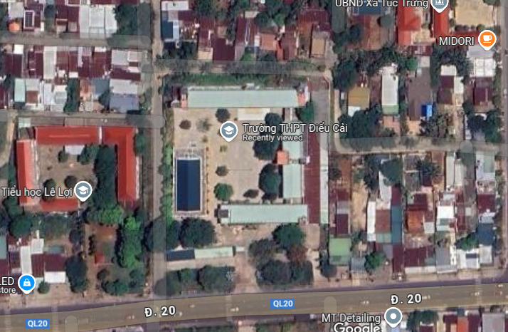
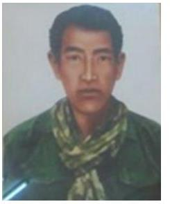
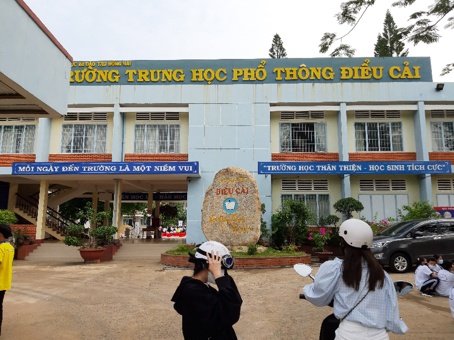

Tuấn Kiệt, Nguyên, Nghĩa, Đại Phát, An, Lộc, Huy, Liêm
- Ấp Đồn Điền 3, huyện Định Quán, tỉnh Đồng Nai, Việt Nam
Trường THPT Điểu Cải là một ngôi trường mang đậm dấu ấn lịch sử và truyền thống của vùng đất Định Quán, Đồng Nai. Nhà trường được đặt tên để tưởng nhớ đến anh hùng Điểu Cải, một biểu tượng sáng ngời về lòng yêu nước và tinh thần chiến đấu bất khuất của dân tộc ta.
Điểu Cải, tên thật là Điểu Văn Cải, là một trong những anh hùng tiêu biểu của dân tộc ta, đặc biệt là đồng bào dân tộc thiểu số
Nhà trường được đặt tên để tưởng nhớ đến anh hùng Điểu Cải, một biểu tượng sáng ngời về lòng yêu nước và tinh thần chiến đấu bất khuất của dân tộc ta.
